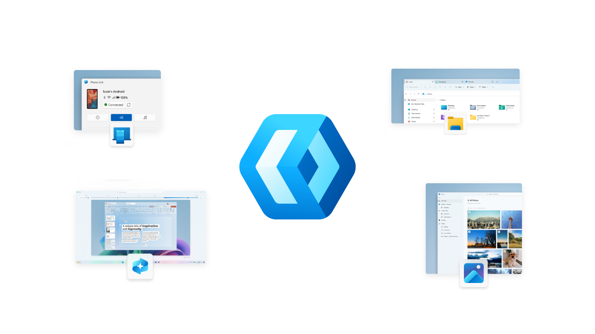

WinUI rollout towards open collaboration
WinUI is the user interface layer containing modern controls and styles for building native Windows applications that the current generation of which of WinUI ships as part of Windows App SDK. Which is a set of libraries, frameworks, components and tools that can be used to access powerful Windows platform functionality. WinUI embraces modern UI with Fluent Design that enables intuitive, accessible and powerful experiences and the latest user interface patterns along with being able to create performant experiences optimised for modern hardware. Windows experiences and applications are built with WInUI and its rich control set, and styles make it easy to develop high-quality experiences.
It was publicly announced that WinUI will go through a phased rollout towards open collaboration over the next six months which include product work and foundational changes to support a more open and collaborative future. The phased approach will begin with the first phase which will happen after the release of Windows App SDK 1.8 in late August 2025 which will be an increased mirroring of Microsoft's internal commits to the GitHub Repository for WinUI that will help increase transparency and show progress. This first phase will be followed by a second phase with the ability for external developers to be able to clone and build the GitHub Repository for WinUI locally along with documentation to guide setup and dependencies.
The third phase for the GitHub Repository for WinUI will be that contributors will be able to submit PRs and run tests locally and Microsoft are working hard to untangle private dependencies along with making test infrastructure publicly accessible. The final phase will be that the GitHub Repository for WinUI will become the primary place for development, issue tracking and community engagement and the internal mirrors for WinUI will be phased out by Microsoft. This will be a complex process that will take time as WinUI has deep roots in Windows and there are propriety layers that are touched by code that can't be published but work is ongoing to separate what can be shared publicly from what can't be shared.
Thanks to this process developers will be able to contribute to WinUI 3 including sharing feedback to help Microsoft prioritise and it will also allow developers to file issues with clear reproduction steps and context. Developers will also be able to upvote issues that matter most to allow the most important issues to be tackled first. Microsoft are working on making incremental progress to work collaboratively with the community on product prioritisation, and will be sharing more soon, update the various phases of the rollout towards open collaboration on the GitHub Repository at github.com/microsoft/microsoft-ui-xaml.